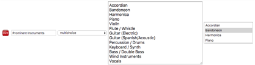

The setup or configuration page is the left most icon on the home page. It is where you should start.
On the first tab you define the music properties that are important to you. The system will provide a few as examples but you can remove some of these and add your own. See the classification section below for more ideas on this topic.
If needed to help get started and before all your songs have been classified you may wish to use the system unclassified. The configuration main tab has this option near the bottom and this, if ticked, will mean that the next time you re-start, every unclassified song will be classified according to your default settings. If you have previously ticked this and wish to remove this, then un-tick it and re-start the system and the unclassified songs will return to their unclassified state.
Whenever you create a new playlist the system will use the above-configured value as the default pattern of music styles for the Tandas. This can be overridden but is helpful to keep the DJ on track with what the Dancers might expect.
The format is simply a single digit number followed by the single letter corresponding to one of the music styles defined in the settings.
The example above shows that songs classified as Tango go by the letter “T”. This T will be shown to the left of the tanda when shown in a playlist
and in the above tanda patterns entry it would mean that for example “3T” would mean 3 songs of the same sub-group such as all “Alternative” but per tanda, any of the the Tango styles is applicable.
The setting controls available are:
· text items,
· tick boxes,
· dropdown lists
· multiple choice lists
· and sliders.
You can associated a main colour with each control and this will help to visually see how similar songs are just from looking at a tanda or playlist.
Most controls are simple enough to setup (but remember to set the name last – a known bug!).
Dropdown lists can offer multiple options as part of one group and the user picks one. For example once you picked a Tango you could use a list to qualify the style such as being a Contemporary orchestra playing an old tune.
The values should be what is meaningful to you and this may take some thinking about and listening before you home in on your final choice.
Multiple choice lists are very flexible. Shown here is a list of musical instruments and the DJ can pick which ones best describe the main sound. Later, when searching the DJ can pick one or more of these and the best matching songs will be found.

The system currently has built in knowledge of the “Style”, “Instrumental” and “BPM” settings. All other settings can be removed and replaced with others as required.
The more settings you have the more choices you have when searching but the Auto-DJ may struggle to find songs that share the same set of properties. So a happy middle ground is probably best. DJs have been known to include drop down lists for decades and the topics of the songs and the emotional content and family members they are singing about and even lists of singers. The system can cope with a reasonable number of them but has not been tested with lots. It comes with just a handful to give an example but these are not meant to be the only ones you have!
See the section on the classification page for more information.
The Tanda Player uses a sound card and manufacturers have a recommended maximum volume at which most songs will play without distortion. The Tanda Player tries to normalize the volumes between songs and therefore there is a single control for setting the overall gain. HifiBerry recommend 80% for their sound card that is the one any pre-assembled Tanda Player will contain. This figure should not need changing and it is not recommended to go higher!
When the Tanda Player is started up it will startup whichever playlist if any has been defined as “Auto-Play”. See to the right of the image below:
Note that only one playlist can be marked and whichever was set last will be the one used. This feature is there to allow a DJ to pre-configure a playlist to be used for example at an informal afternoon dance event that does not require a DJ. As a result the DJ does not need to take a laptop along as the DJ can use their phone to adjust things if necessary but otherwise the Tanda Player will simply work its way through the playlist.
This means that the system starts up at the volume pre-configured too. If you regularly use headphones you may wish to have this lower and if you always use a PA system you might want this higher. The startup volume is defined on the setup page as shown:
If the DJ chooses to use Cortinas with a playlist, these can sometimes appear to be much louder than the main Tango music. Therefore the DJ can configure the volume of cortinas to be lower by some percentage of the volume of the main songs.
If the DJ uses cortinas with a playlist, when they are playing the DJ will be presented with a blue button to stop them early.
This button fades the Cortina out and starts the next tanda. The rate at which the volume is faded out is set in the Setup app here:
Note that this is only the default and playlists can have their own overriding value set in the Live Player. Likewise, the default time for a Cortina to play if left unattended is controlled by the following:
Alternatively the setting for the current playlist only is this
If the DJ has set the auto-fade for cortinas to occur before the Cortina would normally end, then the second blue button appears looking like a play button. This button will update the system for this one song only allowing the entire song to play and prevent the auto-fade. Once clicked, it will disappear. You must click this before the song starts to automatically fade otherwise it will fade anyway.
Setting the playlist to play the whole cortina will prevent the blue play button above from being shown. Only the stop button will be available.
It is not recommended to use the Master Equalizer settings in a live performance but if using on the home Hi-Fi or headphones for pleasure the EQ settings can be enabled. Note that if you turn frequency bands up then the overall gain should be lowered so that the system does not overload those frequencies resulting in distortion. Changing these will affect the music in real time so you can hear the changes you are making.
The reset button will simply put all sliders back into the middle.
Remember to save your configuration once you are done.
The Tanda Player does not apply complex compression types of normalization in realtime. It offers “None”, “Peak” or “Mean” level based normalisations, and the latter works very well provided there is still enough output level from the system to drive the sound system.
If you prefer, you can use commercial tools to convert somr or all of your entire collection using standards such as the EBU R128 normalisation. This compresses the signal to achieve a high and constant output level as perceived by the human ear. Although this algorithm is available within the Tanda Player it is very resource hungry and the Tanda Player’s computer is not that powerful and as a result, for the least likelihood of issues related to processing the sound during playback, this is not used and not available through the app.
For the best sound quality if all your music has already been normalised using other software or if all your songs just happen to be the same level or there about, then select “None” as the choice.
For normalizing sound levels the Tanda Player uses knowledge of all eligible songs within the database (music and cortinas) that have not been put off limits due to analysis identifying issues with the file itself or the user Hiding the song from Tanda Player during classification.
The system extracts both the peak and the mean levels of the
song as part of the analysis process and these can be used in one of two ways
to normalize the sound between all the songs in your library.
Selecting the mean level normalisation results in the overall output of the system being quieter than if not using this normalisation.
The mean level algorithm finds the quietest mean level of all songs in the entire database. It then works out the maximum gain it can give to this song that will boost its output but not cause distortion. This brings the mean level up. This new mean level is then chosen as the preferred mean level of all songs it plays. So any other song (which must be louder) is then turned down so that its mean level is the system’s preferred mean.
This approach retains the dynamic range of songs whilst preventing any songs from distortion caused by clipping. It also provides a reasonable control over the general level of the songs. However, Peak sounds will still be peaks and could be quite loud but because they are peaks they should not persist too long.
The mean level normalization may result in the overall sound from the Tanda Player being very low because of a spike in sound level on an otherwise very quiet song – i.e. a song with a very high dynamic range may cause the overall sound level to suffer as the system holds in reserve the ability to play the peak without distortion.
NOTE – if the normalisation results in sound levels that are too low:
· Identify the songs that are dragging the system gain down (because they are very quiet and have a high dynamic range) and resolve the issue either by removing the files or normalising them using commercially available software.
· To maintain the best sound, use your PA system or amplifier to provide the required sound level.
· If you cannot increase the volume sufficiently using the amplifier then increase the master volume on the general settings tab. Both options may provide a boost which is mostly free of distortion.
· If all else fails, as a last resort, to allow for some volume level to be re-gained a slider is provided whereby you can increase the maximum volume. However, any value above 100% will cause at least one song in your collection to distort. The higher the level, the more songs that may get some distortion. However, when the value is above 100% the system adds a filter to soften the clipping of the sound as they exceed the systems capabilities. This maximum volume can be increased to values above 300% with very listenable results as it should be the peaks that are overloading and not the whole song. However, you may notice higher values especially on recordings which have already been heavily processed either in the original form or as a result of converting to MP3 or other formats.
· If you find you need to increase the sound levels, then it is recommended that you use commercial software to fix the dynamic range and sound levels within the recording and re-add to the Tanda Player in place of the old version. Make sure to remove it properly first so that the Tanda Player spots the replacement and re-assesses the sound properties. Repeat for all the songs causing the very low sound level. Remember the sound level is the mean level of sound of the quietest recordings – increase the mean of your quietest songs and it will get louder.
It is recommended to not use this maximum volume increase if you do not need it and set it to 100% - Every additional bit of processing done by the Tanda Player adds another layer in which some distortion to the sound can occur.
The peak level algorithm is much simpler and attempts to only adjust each song according to its own maximum level so that all songs have the same peak level. This option may be preferred in environments where the speakers or amplifiers would not cope well with strong peaks above a pre-adjusted level. However, it may mean that some songs with fewer peaks are much quieter than those with more peaking content.
If you wish to identify the quiet songs and process them so that they are louder recordings, then the Normalisation Tab in the setup page has a table which may help. It shows the distribution of the loudness of the songs. Songs below -20dB should be considered candidates for increasing the loudness of using external means.
The following shows a collection before normalization showing some songs were very quiet and had an average loudness level of -29dB. After normalizing all songs below -20dB the view shows the songs now re-grouped with nothing below -20dB.
Because 3dB is roughly twice as loud, the increase of nearly 9dB is a significant boost to the output level of the Tanda Player.
You can choose to identify the quiet songs by picking the dB level below which you are interested in and set the slider and click the export button.
Note that the red line shows the system level to which all songs are adjusted downward so that they all play at the same level. (They cannot be adjusted to higher levels because the quieter songs contain strong peaks or bursts of sound which would then exceed the maximum the system can handle and distort and could cause loudspeaker damage)
If you do not need the very quiet songs for Milongas, get rid of them or mark them as Hidden from Tanda Player. You can examine the exported file (which goes to the USB device as “normal.txt”to locate and remove these files.
Early versions of the system used audio-streaming to send the music to the users browser so that they could plug headphones in and listen to music. But streams cannot be used easily to jump about from one part of the song to another. A replacement of this component now uses a full-song download to the browser which can result in a short delay before the song starts playing but once all downloaded to the browser, the user can jump around in the song to hear different parts. To give the user something to indicate where in the song they are an audio representation is produced as a waveform.
The above image shows a cortina playing and the waveform represents the entire song. The vertical red line about a quarter of the way long shows the part of the song playing at the moment. The red line moves along to the right. The darker part to the left is the part already played.
If the DJ clicks on a headphone symbol against a song the above image will change to include a headphone symbol to the left of the waveform.
In headphone mode the DJ can click anywhere on the waveform and the song will skip to that location. Clicking on the headphone symbol will stop the headphone playback.
If your device is running on battery you may wish to switch these features off as the constant progress update uses a lot of processing power in the browser on the laptop or phone etc.
These can be switched off using the check boxes on the configurations main page.
The above option if switched off will operate in a similar manner to the original streaming solution.
The following checkbox will show the waveform when playing a live song and provides visual interest only. In preparation mode in the live player however the DJ can click on the waveform to jump about in the song.
Note that the progress and current position indicator are accurate in the headphone mode but are an approximation in the live mode simply because the music plays from the Tanda Player but the web page viewed by the DJ is accessed over the network and can be out of sync.